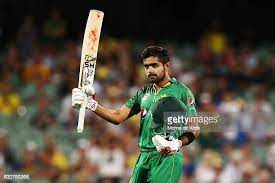

Cricket
History
There is a consensus of expert opinion that cricket may have been invented during Saxon or Norman times by children living in the Weald, an area of dense woodlands and clearings in south-east England. The first reference to cricket being played as an adult sport was in 1611, and in the same year, a dictionary defined cricket as a boys' game. There is also the thought that cricket may have derived from bowls, by the intervention of a batsman trying to stop the ball from reaching its target by hitting it away. Village cricket had developed by the middle of the 17th century and the first English “county teams” were formed in the second half of the century, as “local experts” from village cricket were employed as the earliest professionals. The first known game in which the teams use county names is in 1709. In the first half of the 18th Century cricket established itself as a leading sport in London and the south-eastern counties of England. Its spread was limited by the constraints of travel, but it was slowly gaining popularity in other parts of England and Women’s Cricket dates back to the 1745, when the first known match was played in Surrey.
RULES IN CRICKET
Cricket is a game played between two teams made up of eleven players each. There is also a reserve player called a “twelfth man” who is used should a player be injured during play.
1. The twelfth man is not allowed to bowl, bat, wicket keep or captain the team. His sole duty is to act as a substitute.
2. The original player is free to return to the game as soon as they have recovered from their injury.
3. To apply the law and make sure the cricket rules are upheld throughout the game there are two umpires in place during games. Umpires are responsible for making decisions and notifying the scorers of these decisions.
4. Two umpires are in place on the playing field while there is also a third umpire off the field who is in charge of video decisions.
5. This is where the call is too close for the on field umpires and they refer it to the third umpire who reviews slow motion video replays to make a decision.
The Pakistan national cricket team, often referred to as the Shaheens (lit. 'Falcons'),[12][13] Green Shirts,[14] Men in Green,[15] and Cornered Tigers[16][17] is administered by the Pakistan Cricket Board (PCB). The team is a Full Member of the International Cricket Council, and participates in Test, One Day International (ODI) and Twenty20 International cricket matches.


Virat Khole gears up for IPL sojourn after losing his favourite bat
Finn Allen, the 21-year-old left-handed batsman, got a pleasant surprise after he was picked to play for the Royal Challengers Bangalore (RCB) in the 2021 edition...
SPORT INFO
When and Where to Watch West Indies vs Sri Lanka, Live Streaming, Match Preview, Timings, and Pitch Report for 2nd ODI
The West Indies cricket team, nicknamed the Windies,[10] is a multi-national men's cricket team representing the mainly English-speaking countries and territories in world
SPORT INFO
 Baber Azam was very intalligent cricketer and pakistan captain
Babar Azam ( born 15 October 1994), is a Pakistani international cricketer who captains Pakistan in
SPORT INFO
Cricket
 Vieux Fort North Raiders Mabouya Valley Constrictors
Vieux Fort North Raiders Mabouya Valley Constrictors
Starts 8:45 PM
12 hours ago
Central Castries Mindoo Heritage Choiseul Clay Pots Starts 11:30 PM
ECS Sweden Stockholm T10 2022
Linkoping Cc Alby Zalmi Cc Starts 2:00 PM
ECS Sweden Stockholm T10 2022
Linkoping Cc Alby Zalmi Cc Starts 4:00 PM
CURRENT SERIES
1.Pakistan vs India
2.Pakistan vs England
3.India vs Srilanka
4.Southafrica vs Australia
5. Bangladesh vs Newzealand